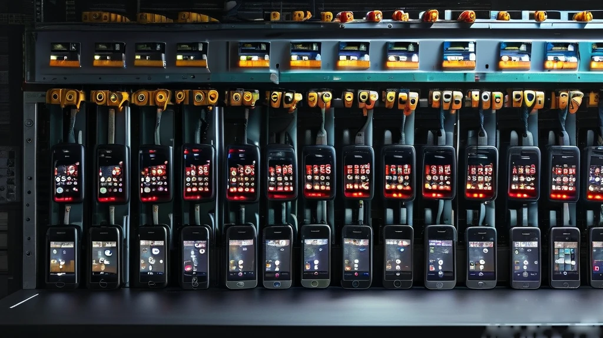
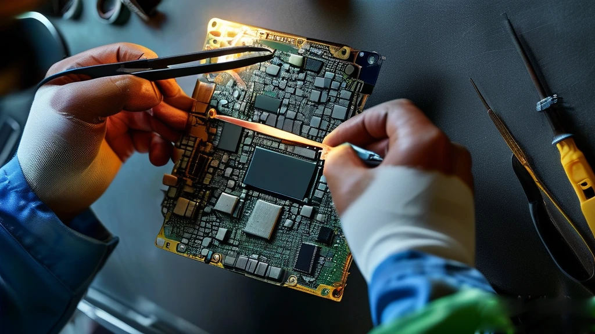
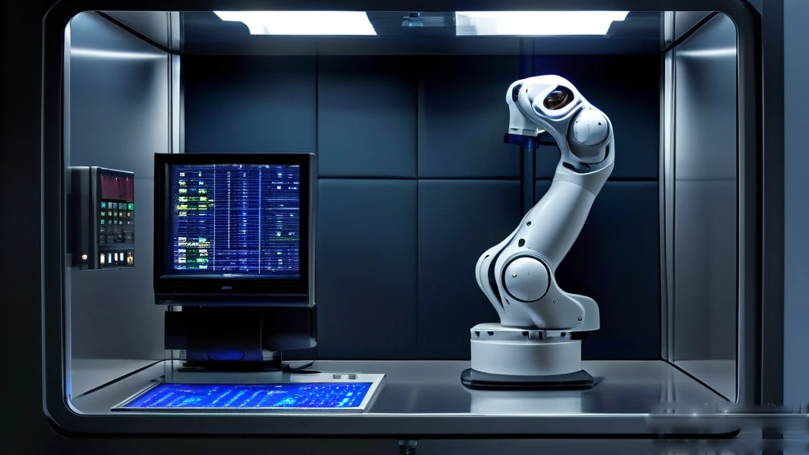

圖片由 AI輔助創作Image by AI
【鄭哥點評】欄目：鄭哥博客點評｜日期：2026-11-21
我做外貿廿六年，最怕聽到一句「呢批貨好靚」。因為「好靚」係形容詞，唔係規格——形容詞講唔到價，規格才可以。二手手機呢門生意，長年就卡喺呢個字眼上面。萬物新生（愛回收，NYSE: RERE）最新一季財報，我覺得值錢嘅唔係 64.5 億呢個數，而係佢終於把「好靚」變成一張可以報價嘅紙。
圖片由 AI輔助創作Image by AI
一、先睇賬：利潤增速跑贏營收增速
財報數：2026 年第三季度，萬物新生總收入 64.5 億元、同比增長 25.3%；其中自營（1P）產品銷售 60 億元、平台（3P）服務收入 4.5 億元。非公認會計準則（non-GAAP）經營利潤 2.1 億元、同比增長 50.7%，經調整經營利潤率由去年同期的 2.7% 升到 3.3%。
門店側依然係重資產：截至三季度末覆蓋全國 303 座城市、門店 2126 家；多品類回收收入同比增長 38%，已有 971 家門店落地多品類回收。手上現金及等價物等合計 19.4 億元。
呢組數最值得睇嘅係斜率：營收升 25%，利潤升 50%。做貿易嘅人都知，營收同利潤同時升唔難，難嘅係利潤升得快過營收——呢個通常唔係「賣多咗」，而係「賣法變咗」。
來源：證券日報網《萬物新生發佈三季度財報：營收 64.5 億元同比增長 25.3%》，2026-11-19｜http://m.zqrb.cn/gscy/qiyexinxi/2026-11-19/A1795090042131.html

圖片由 AI輔助創作Image by AI
二、變厚嘅唔係收入，係結構
舊模式好簡單：收機 → 檢測定級 → 掛上批發平台（拍機堂等）畀各地手機店競拍 → 回款。周轉快，但最厚嗰段零售毛利留咗喺下游檔口。
新動作係：把一部分「有整備價值」嘅機攔落嚟，換合規電池或屏幕、深度清潔，附一張寫明電池健康度同主板狀態嘅質檢報告，加「7 天無理由退貨 + 一年質保」，再經自營渠道同直播賣畀終端用戶。
結果寫喺財報度：自營合規翻新產品收入同比增長 34.6%；自營產品直接面向消費者嘅零售收入（1P2C）同比增長 44.3%，佔自營產品總收入 41.4%；自營毛利率由 13.4% 升到 14.4%。
14.4% 減 13.4%，聽落只係一個百分點。但乘上單季 60 億嘅自營盤，就係約 6 千萬元毛利增量。呢個就係「賣法變咗」嘅價錢。
來源：新京報《萬物新生第三季度營收 64.5 億元 海外產品收入同比增長 150%》（陳維城），2026-11-19｜https://www.bjnews.com.cn/detail/1795083824129360.html

圖片由 AI輔助創作Image by AI
三、真正嘅手藝：把「一機一況」變成「一機一單」
二手生意嘅死結喺四個字：一機一況。同一型號，兩部機可以差三成價——差在電池循環、屏幕有冇換過、主板有冇拆修、有冇網絡鎖。
呢啲差異，如果靠人眼同口頭描述，就永遠只能做「熟人生意」。所以呢門生意嘅工業化，本質係把「感覺」變成「數據」：AI 圖像識別主板焊點同拆修痕跡、鎖機排查、瑕疵建檔、統一分級刻度，最後出一張電子質檢單。
公開資料顯示，平台第三方商品入倉質檢比例已達 85.3%，同比提升約 6.7 個百分點；東莞自動化運營中心嘅智能立庫同自動質檢系統，單日最高可處理 3.6 萬台設備。
呢啲數字嘅意思唔係「佢好先進」，而係：**佢有資格報價**。當一部舊機嘅狀態可以被第三方覆核，佢就由「你話靚」變成「單上寫明」。
來源：新京報《萬物新生第三季度營收 64.5 億元 海外產品收入同比增長 150%》（陳維城），2026-11-19｜https://www.bjnews.com.cn/detail/1795083824129360.html
圖片由 AI輔助創作Image by AI
四、出海唔係賣機器，係輸出「定級語言」
國內嚴選挑剩嘅機器——三四年前嘅舊款、邊框有明顯磕碰——唔適合擺國內貨架；但喺東南亞、中東、非洲，一部功能完好、外觀有瑕疵嘅舊款品牌機，正好係街邊手機店最走量嘅貨。
香港政府新聞公報寫得好清楚：2026 年 7 月 28 日，投資推廣署宣布萬物新生在港開設首店，以新品牌「RERE」（Revalue and Renew）登場，並獲京東 Mall 香港簽署合作備忘錄；集團計劃以**香港及迪拜「雙樞紐」**推進國際化，拓展東南亞、中東、西亞及北非市場。同一份公報引述 IDC 預測：到 2027 年全球二手智能手機市場規模將突破 4.3 億部、價值接近 1,100 億美元。
而迪拜辦公室已於 2026 年 10 月啟動試運營，第三季度海外業務產品收入同比增長 150%。
但我要補一句冷靜話：財報冇單獨披露海外業務嘅絕對收入規模，亦冇拆出香港、迪拜節點嘅獨立盈虧。150% 嘅增速，只說明管道跑通，未證明佢已經係利潤支柱。
來源：香港特別行政區政府新聞公報《內地循環科技行業龍頭萬物新生（愛回收）在港開設門店 打造出海樞紐》，2026-07-28｜https://www.info.gov.hk/gia/general/202607/28/P2026072700500.htm
圖片由 AI輔助創作Image by AI
五、鄭哥點評
呢門生意嘅暴利，唔係嚟自「翻新」呢個動作，而係嚟自「定級權」。翻新係工序，定級係權力——邊個嘅尺被市場接受，邊個就揸住定價權。
跨境呢一段最值錢：跨國二手批發幾十年卡喺「定級互信」。供貨商話 A 級，買家拆箱見到組屏機、有鎖機。退一單貨，運費加跌價，半個月利潤冇咗。所以香港同迪拜賣嘅唔係手機，係「同一把尺」——把熟人交易變成可以遠程下單嘅生意。
但呢條鏈最脆嘅地方亦喺度：庫存跌價 + 質保兜底。手機係按周貶值嘅商品，秋季新機一發、電商一補貼，嚴選機喺倉多躺半個月，辛苦整備多賺嗰一個點毛利就被跌價食晒；再加一年質保期內嘅真實返修支出。所以呢 1.4 個億利潤唔係品牌溢價，係嚴控周轉摳出嚟嘅管理紅利。
最後一句：收破爛收嘅係廢品，賣嘅係標準。邊個可以把「一機一況」講成「一機一單」，邊個就唔再係收破爛嘅，而係做供應鏈嘅。
圖片由 AI輔助創作Image by AI
\[Zheng Ge's Take\] Column: Zheng Ge's blog commentary | Date: 2026-11-21
Twenty-six years in foreign trade have taught me to flinch at the phrase 'this batch is nice'. Nice is an adjective, not a specification - and adjectives cannot be priced. Specifications can. The second-hand phone business has been stuck on exactly that word for years. In ATRenew's latest quarterly report (NYSE: RERE, the company behind Aihuishou), the number worth studying is not the 6.45 billion yuan of revenue. It is that the company has finally turned 'nice' into a sheet of paper you can quote against.
圖片由 AI輔助創作Image by AI
1. Read the numbers: profit is growing faster than revenue
The numbers: in the third quarter of 2026 ATRenew booked total revenue of 6.45 billion yuan, up 25.3 per cent, split into 6.0 billion from self-operated (1P) product sales and 450 million from platform (3P) services. Non-GAAP operating profit reached 210 million yuan, up 50.7 per cent, lifting the adjusted operating margin from 2.7 per cent a year earlier to 3.3 per cent.
The store network remains asset-heavy: 2,126 stores across 303 cities by the end of the quarter, multi-category recycling revenue up 38 per cent with 971 stores offering it, and 1.94 billion yuan in cash, equivalents and short-term investments.
The slope is what matters here: revenue up 25, profit up 50. Anyone in trade knows that growing both is not hard. What is hard is profit outrunning revenue - and that rarely means selling more. It usually means selling differently.
Source: 證券日報網《萬物新生發佈三季度財報：營收 64.5 億元同比增長 25.3%》，2026-11-19 | http://m.zqrb.cn/gscy/qiyexinxi/2026-11-19/A1795090042131.html
圖片由 AI輔助創作Image by AI
2. What thickened was the mix, not the revenue
The old model was simple: collect the handset, test and grade it, list it on a wholesale platform such as Paijitang for shopkeepers to bid on, take the money. Fast turnover - but the fattest retail margin stayed with the dealer downstream.
The new move is to hold back the units worth refurbishing: swap in compliant batteries or screens, deep-clean them, attach a report stating battery health and mainboard condition, add seven-day no-reason returns plus a one-year warranty, then sell to end users through owned channels and livestreams.
The result shows up in the filing: revenue from compliant refurbished products up 34.6 per cent year on year; self-operated direct-to-consumer revenue (1P2C) up 44.3 per cent and now 41.4 per cent of self-operated product revenue; self-operated gross margin up from 13.4 to 14.4 per cent.
Fourteen point four minus thirteen point four sounds like a single point. Multiply it by six billion yuan of quarterly self-operated sales and it is roughly sixty million yuan of extra gross profit. That is the price of selling differently.
Source: 新京報《萬物新生第三季度營收 64.5 億元 海外產品收入同比增長 150%》（陳維城），2026-11-19 | https://www.bjnews.com.cn/detail/1795083824129360.html
圖片由 AI輔助創作Image by AI
3. The real craft: turning one-machine-one-condition into one-machine-one-listing
The knot in this business is four words: one machine, one condition. Two handsets of the same model can differ by thirty per cent in price - battery cycles, whether the screen was swapped, whether the board was opened, whether there is a carrier lock.
Described by eye and by mouth, those differences can only ever support deals between acquaintances. So industrialising this trade means turning feel into data: AI image recognition of solder joints and repair marks, lock checks, defect records, a unified grading scale, and finally an electronic inspection sheet.
Public figures show the share of third-party goods receiving inbound inspection on the platform has reached 85.3 per cent, up about 6.7 percentage points year on year, while the automated Dongguan operations centre can handle up to 36,000 devices a day.
Those numbers do not mean the company is advanced. They mean the company has the right to quote a price. Once a handset's condition can be verified by a third party, 'you say it's nice' becomes 'the sheet says what it is'.
Source: 新京報《萬物新生第三季度營收 64.5 億元 海外產品收入同比增長 150%》（陳維城），2026-11-19 | https://www.bjnews.com.cn/detail/1795083824129360.html
圖片由 AI輔助創作Image by AI
4. Going abroad is not exporting handsets, it is exporting the grading language
The units that fail domestic selection - four-year-old models, frames with visible dents - do not belong on a domestic shelf. In Southeast Asia, the Middle East and Africa, though, a working handset with cosmetic damage is exactly what a street-corner phone shop sells most of.
The Hong Kong government's press release puts it plainly: on 28 July 2026 Invest Hong Kong announced the company's first Hong Kong store under the new brand RERE (Revalue and Renew), backed by a memorandum with JD Mall Hong Kong, with the group planning to internationalise from a Hong Kong and Dubai 'dual hub' into Southeast Asia, the Middle East, West Asia and North Africa. The same release cites IDC forecasting the global second-hand smartphone market past 430 million units and near 110 billion dollars in value by 2027.
The Dubai office began trial operations in October 2026, and overseas product revenue grew 150 per cent year on year in the third quarter.
One sober note: the filings do not break out the absolute size of overseas revenue, nor the standalone profit and loss of the Hong Kong and Dubai nodes. A 150 per cent growth rate proves a pipeline runs. It does not prove a profit pillar exists.
Source: 香港特別行政區政府新聞公報《內地循環科技行業龍頭萬物新生（愛回收）在港開設門店 打造出海樞紐》，2026-07-28 | https://www.info.gov.hk/gia/general/202607/28/P2026072700500.htm
圖片由 AI輔助創作Image by AI
5. Zheng Ge's Take
The fat margin here does not come from refurbishing. It comes from the right to grade. Refurbishing is a process; grading is power - whoever's ruler the market accepts holds the pricing power.
The cross-border leg is where the value sits. International wholesale of used phones has been stuck for decades on mutual trust in grading: the supplier says grade A, the buyer opens the box and finds a swapped screen, a carrier lock. Send one shipment back and freight plus depreciation eats half a month of margin. So what Hong Kong and Dubai sell is not handsets, it is the same ruler - turning acquaintance deals into orders that can be placed remotely.
But that is also the fragile part: inventory depreciation and warranty exposure. Phones lose value by the week; a new-model launch or an e-commerce subsidy can leave refurbished stock sitting an extra fortnight and wipe out the single margin point that refurbishing earned, before counting real repair claims inside a one-year warranty. That 140 million yuan of profit is not brand premium - it is a management dividend squeezed out of tight turnover.
One last line: scrap collectors collect waste. What this business sells is a standard. Whoever can turn one-machine-one-condition into one-machine-one-listing stops being a scrap collector and becomes a supply chain.